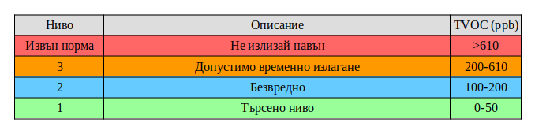

Съдържание на летливи органични съединения във въздуха
Летливите органични съединения - са група химични съединения в основата на които стои въглерода. Те могат лесно да се изпаряват при стайна температура. Болшинството хора могат да почустват мириса на някой от тези съединения при висока концентрация, но повечето от тях нямат изобщо мирис. Във всекидневния си живот ние ползваме хиляди различни химикали съдържащи ЛОС - ацетон, бензин, етиленгликол, ксилол, формалдехид.
Рискът за здравето при вдишване на ЛОС зависи от тяхната концентрация във въздуха, колко дълго и колко често ги вдишвате. Вдишването дори на малки количества летливи органични съединения може да повиши риска от възникване на проблеми със здравето. Според някои иследвания ЛОС негативно влияят на хора страдащи от астма или на тези, които са особенно чуствителни към химични съединения.
Допустими норми за органични летливи съединения във въздуха
Настоящият проект е разработен от Българската асоциация по биологична растителна защита за да визуализира в реално време нивата на летливи органични съединения във въздуха в близост до завода на Кроношпан в град Велико Търново. Целта му е да сигнализира живущите в града за потенциално превишаване на тяхното съдържание във въздуха който дишаме. За коментари и мнения можете да се свържете с нас като ни пишете на email: info@air3.xyz
Форма за абонамент
Карта на покритие